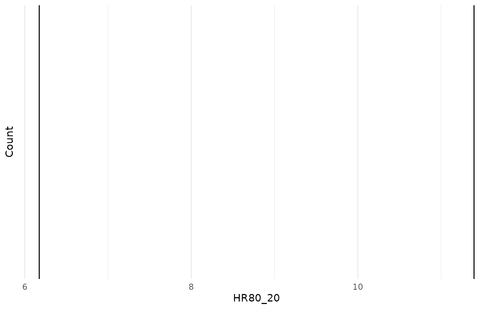
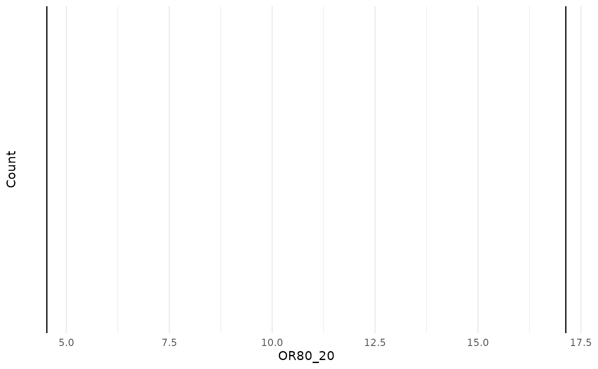

Getting started with `{hazrd}`
hazrd.RmdHere is our test data included in the package.
head(test_data)
#> phs age status
#> 1 0.8425735 67.95011 1
#> 2 1.1151321 56.31356 0
#> 3 -0.3777455 72.94103 1
#> 4 0.1201511 82.01571 1
#> 5 -0.4041602 74.33629 1
#> 6 -0.4531890 77.15814 1Next, plot the histogram of PHSes by case/control status.
phs_hist(test_data, normalize = TRUE)Generating test statistics and confidence intervals
Then, calculate the hazard ratio comparing the mean of the top 20% of
PHSes to the mean of the bottom 20% (i.e., HR80_20). We can
also generate 95% confidence intervals using bootstrapping.
HR80_20 = get_hr(test_data, CI = TRUE, boot = 300)
str(HR80_20)
#> List of 5
#> $ index : chr "HR80_20"
#> $ value : num 8.17
#> $ conf.low : num 6.17
#> $ conf.high: num 11.4
#> $ iters : num [1:300, 1] 6.35 8.38 6.43 6.65 7.32 ...Each get_ function also returns the output from each
bootstrap iteration in $iters so that the user can plot
these or calculate their own confidence intervals:
ggplot(mapping = aes(x = HR80_20$iters)) +
geom_histogram(binwidth = 2/3) +
geom_vline(xintercept = HR80_20$HR, color = "red") +
geom_vline(xintercept = HR80_20$conf.low) +
geom_vline(xintercept = HR80_20$conf.high) +
theme_minimal() +
labs(x = "HR80_20", y = "Count")
Similarly, calculate the odds ratio at age 70 between the top 20% and bottom 20% of PHSes.
OR80_20 = get_or(test_data, or_age = 70, CI = TRUE, boot = 300)
str(OR80_20)
#> List of 6
#> $ index : chr "OR80_20"
#> $ value : num 8.52
#> $ conf.low : num 4.53
#> $ conf.high: num 17.1
#> $ age : num 70
#> $ iters : num [1:300, 1] 7.97 11.73 8.86 4.27 5.04 ...
ggplot(mapping = aes(x = OR80_20$iters)) +
geom_histogram(binwidth = 3/2) +
geom_vline(xintercept = OR80_20$OR, color = "red") +
geom_vline(xintercept = OR80_20$conf.low) +
geom_vline(xintercept = OR80_20$conf.high) +
theme_minimal() +
labs(x = "OR80_20", y = "Count")
Return the concordance index with 95% confidence intervals from a coxph fit:
c_index = get_cindex(test_data, CI = TRUE, boot = 300)
str(c_index)
#> List of 5
#> $ index : chr "C_Index"
#> $ value : num 0.708
#> $ conf.low : num 0.678
#> $ conf.high: num 0.734
#> $ iters : num [1:300, 1] 0.713 0.718 0.71 0.714 0.695 ...Finally, plot the Kaplan-Meier curves with confidence intervals for centiles of interest.
curves = data.frame(curve0_20 = c(0, 0.2),
curve20_70 = c(0.2, 0.7),
curve80_98 = c(0.8, 0.98),
curve98_100 = c(0.98, 1.0))
label_generator = function(x, y) {
x = x * 100
y = y * 100
out = paste0("PHS ", x, "-", y, "th centile")
return(out)
}
km_curves = data.frame()
for (i in seq_len(length(curves))) {
curven <- km_curve(data = test_data,
interval = curves[[i]],
age_range = 40:100,
scale = FALSE,
inverse = FALSE)
curven$label = label_generator(curves[1, i], curves[2, i])
km_curves = rbind(km_curves, curven)
}
ggplot(km_curves, aes(x = time,
y = estimate,
ymin = conf.low,
ymax = conf.high,
col = label,
fill = label)) +
geom_ribbon(alpha = 0.1,
color = 0) +
geom_step() +
theme_minimal() +
xlim(40, 100) +
ylim(0, 1) +
labs(x = "Age", y = "Disease-free Survival") +
scale_color_brewer(palette = "Set1",
name = "Centile") +
scale_fill_brewer(palette = "Set1",
name = "Centile")
#> Warning: Removed 15 rows containing missing values or values outside the scale range
#> (`geom_step()`).More advanced topics
Data format
Each of the functions in this package (e.g., get_hr,
get_or, phs_hist, etc.) can accept data in
several formats. If your data.frame contains standard
columns phs, age, and status,
then you can simply pass the data.frame object to the
data = argument:
get_hr(data = test_data) |>
str()
#> List of 5
#> $ index : chr "HR80_20"
#> $ value : num 8.17
#> $ conf.low : NULL
#> $ conf.high: NULL
#> $ iters : NULLIf your data is stored in a data.frame with non-standard column
names, e.g., HazardScores, CaseControl, and
AgeLastObs,
test_data2 = with(test_data, data.frame(HazardScores = phs,
CaseControl = status,
AgeLastObs = age))
head(test_data2)
#> HazardScores CaseControl AgeLastObs
#> 1 0.8425735 1 67.95011
#> 2 1.1151321 0 56.31356
#> 3 -0.3777455 1 72.94103
#> 4 0.1201511 1 82.01571
#> 5 -0.4041602 1 74.33629
#> 6 -0.4531890 1 77.15814then you can specify these column names as separate arguments:
get_hr(data = test_data2,
phs = "HazardScores",
status = "CaseControl",
age = "AgeLastObs") |>
str()
#> List of 5
#> $ index : chr "HR80_20"
#> $ value : num 8.17
#> $ conf.low : NULL
#> $ conf.high: NULL
#> $ iters : NULLIf any of your data is not in a data.frame, but is instead in separate vectors, you can provide these individually by name:
hazScore = test_data$phs
caseCon = test_data$status
ageLastObs = test_data$age
get_hr(phs = hazScore,
status = caseCon,
age = ageLastObs) |>
str()
#> List of 5
#> $ index : chr "HR80_20"
#> $ value : num 8.17
#> $ conf.low : NULL
#> $ conf.high: NULL
#> $ iters : NULLLastly, you can do any combination of the above:
test_data3 = data.frame(phs = test_data$phs,
CaseControl = test_data$status)
Ages = test_data$age
get_hr(data = test_data3,
#phs = "phs", # omitted because test_data3 already contains column "phs"
status = "CaseControl",
age = Ages) |>
str()
#> List of 5
#> $ index : chr "HR80_20"
#> $ value : num 8.17
#> $ conf.low : NULL
#> $ conf.high: NULL
#> $ iters : NULLHazard ratios and odds ratios
Specifying intervals
The get_hr function allows several options for
customizing your hazard ratios. By default, it calculates the
HR80_20, which compares the top 20% of PHSes to the bottom
20%. However, custom intervals can be specified using the
upper_interval and lower_interval
arguments.
get_hr(test_data,
lower_interval = 0.2,
upper_interval = 0.8) |>
str()
#> List of 5
#> $ index : chr "HR80_20"
#> $ value : num 8.17
#> $ conf.low : NULL
#> $ conf.high: NULL
#> $ iters : NULLThese are the default arguments. If one value is passed to
upper_interval then it calculates the hazard ratio for the
interval 0.8:Inf. Similarly, lower_interval
will use -Inf:0.2. However, two values can be specified as
a vector to specify a particular range. For example, if you want the
lower interval to be the middle 40% of PHSes, you can specify
lower_interval = c(0.3, 0.7).
get_hr(test_data,
lower_interval = c(0.3, 0.7),
upper_interval = c(0.8, Inf)) |>
str()
#> List of 5
#> $ index : chr [1:2] "HR80_30" "HRInf_70"
#> $ value : num 3.04
#> $ conf.low : NULL
#> $ conf.high: NULL
#> $ iters : NULLinterval specifications are the same for odds ratios from
get_or as for get_hr. The only difference is
that the odds ratio must be calculated at a particular age, which is
passed with the or_age argument:
Confidence intervals from bootstrapping
95% confidence intervals for the estimates from the
get_hr, get_or, and get_cindex
functions can be generated by bootstrapping. This is done by by
specifying CI = TRUE and providing a number of bootstrap
iterations with bootstrap_iterations =. In this case,
get_hr returns a list containing the hazard ratio and the
values for the upper and lower 95% confidence intervals as well as all
of the HR estimates from each bootstrap iteration in
iters.
Sample weight correction
This is an experimental feature and hasn’t been tested. If you wish
to perform sample weight correction for HR, OR or C-Index, you can
enable it with the flag swc = TRUE. You must provide the
population number of cases and the population number of controls to
perform sample weight correction. These are provided with the
swc_popnumcases and swc_popnumcontrols
arguments.
Plotting curves
To plot Kaplan-Meier curves, you can use the km_curve
function to return a single Kaplan-Meier curve for a given interval.
Plotting must be performed manually once you have returned these
curves.
curven <- km_curve(data = test_data,
interval = c(0.80, 1.00),
age_range = 40:100,
scale = FALSE,
inverse = FALSE)interval specifies the lower and upper quantile of the
interval. In this case, the K-M curve for the top 20% of samples
(0.8:1.0) will be returned. In addition,
age_range specifies the ages over which the curve should be
generated. Can be on the order of 40:100 for
age-at-diagnosis or similar. Alternatively, can be 0:10
for, for exmaple, age of conversion to AD after MCI diagnosis.
We can generate multiple curves at various intervals and get them into a data.frame:
curves = data.frame(curve0_20 = c(0, 0.2),
curve20_70 = c(0.2, 0.7),
curve80_98 = c(0.8, 0.98),
curve98_100 = c(0.98, 1.0))
label_generator = function(x, y) {
x = x * 100
y = y * 100
out = paste0("PHS ", x, "-", y, "th centile")
return(out)
}
km_curves = data.frame()
for (i in seq_len(length(curves))) {
curven <- km_curve(data = test_data,
interval = curves[[i]],
age_range = 40:100,
scale = FALSE,
inverse = FALSE)
curven$label = label_generator(curves[1, i], curves[2, i])
km_curves = rbind(km_curves, curven)
}And plot them:
ggplot(km_curves, aes(x = time,
y = estimate,
ymin = conf.low,
ymax = conf.high,
col = label,
fill = label)) +
geom_ribbon(alpha = 0.1,
color = 0) +
geom_step() +
theme_minimal() +
xlim(40, 100) +
ylim(0, 1) +
labs(x = "Age", y = "Disease-free Survival") +
scale_color_brewer(palette = "Set1",
name = "Centile") +
scale_fill_brewer(palette = "Set1",
name = "Centile")
#> Warning: Removed 15 rows containing missing values or values outside the scale range
#> (`geom_step()`).
Individual Prediction
It is possible to generate a lookup table to perform individual prediction on a new, un-observed individual for which we have calculated a PHS score. To do this, we fit the model using our data and generate predicted curves for each of 99 percentiles (1 to 99%). We then output these curves with their associated PHS score at each percentile. This removes any connection to the subject-level data so is safe to export from secure computing platforms. We can then plot the prediction for the closest percentile to the new individual’s PHS
Here is an example workflow:
# Create the lookup table (on a secure computing platform using
# individual-level data)
lookup_table = create_lookup_table(test_data)Export that lookup table from the computing platform and then identify the percentile for a new subject. Based on this toy dataset, a subject with a PHS of 1.6 would be approximately in the 94th percentile. Here, I plot the predicted curve for the median percentiel (50%) with a gray shaded area for the confidence intervals, an individual line for every percentile from 1 to 99, and I have highlighted in red the predicted risk curve and confidence intervals for the “new” hypothetical subject with a PHS of 1.6 (94th percentile):
ggplot(lookup_table[lookup_table$percentile == 0.50, ],
aes(x = time, y = surv, ymin = lower, ymax = upper)) +
geom_line() +
geom_ribbon(alpha = 0.5) +
theme_classic() +
geom_line(aes(x = time, y = surv, group = percentile), data = lookup_table, alpha = 0.1) +
geom_line(aes(x = time, y = surv, group = percentile),
data = lookup_table[lookup_table$percentile == 0.94, ],
color = "red") +
geom_ribbon(aes(x = time, y = surv, ymin = lower, ymax = upper),
data = lookup_table[lookup_table$percentile == 0.94, ],
alpha = 0.5, fill = "red") +
labs(x = "Age", y = "Disease-free Survival")
Percentiles versus Quintiles for comparison and prediction
In the literature on PHS, there are at least two ways that folks visualize the survival estimates for different PHS models. One is to compare the 20th percentile to the 80th percentile. The other is to compare quintiles, that is, the top 20% of PHSes to the bottom 20%. Here is an explanation of how to do both and how those estimates compare:
Percentiles
library(survival)
# Fit the coxph model
cp_fit = coxph(Surv(age, status) ~ phs, data = test_data)
# Calculate the PHS at each percentile of interest
phs0.2 = as.numeric(quantile(test_data$phs, 0.2))
phs0.8 = as.numeric(quantile(test_data$phs, 0.8))
phs0.5 = as.numeric(quantile(test_data$phs, 0.5))
# Generate some new data for prediction using these PHS scores
new_data0.2 <- data.frame(status = 1,
age = 40:100,
phs = phs0.2)
new_data0.8 = new_data0.2
new_data0.8$phs = phs0.8
new_data0.5 = new_data0.2
new_data0.5$phs = phs0.5
# Using our original model, generate a predicted survival curve
cp_predict_0.2 <- predict(cp_fit, new_data0.2, type = "survival")
cp_predict_0.8 <- predict(cp_fit, new_data0.8, type = "survival")
cp_predict_0.5 <- predict(cp_fit, new_data0.5, type = "survival")
ggplot() +
geom_step(aes(x = age, y = cp_predict_0.2), data = new_data0.2, color = 4) +
geom_step(aes(x = age, y = cp_predict_0.8), data = new_data0.8, color = 2) +
geom_step(aes(x = age, y = cp_predict_0.5), data = new_data0.5, color = 3) +
labs(x = "Age", y = "Disease-free Survival") +
theme_minimal()
Here, the blue line is the 20th percentile, the green line is the 50th percentile, and the red line is the 80th percentile.
Quintiles
# Cut the PHSes into groups based on percentile.
# Here, we are splitting them into 0-20%, 20-80%, and 80-100%
test_data$phs_group <- cut(test_data$phs, c(-Inf, phs0.2, phs0.8, Inf),
labels = c("0-20", "20-80", "80-100"))
# Fit the model, this time with group as the predictor rather than the PHS
cp_fit_group <- coxph(Surv(age, status) ~ phs_group, test_data)
# Generate some new data for prediction
new_data0020 <- data.frame(status = 1,
age = 40:100,
phs_group = "0-20")
new_data2080 <- new_data0020
new_data2080$phs_group = "20-80"
new_data80100 <- new_data0020
new_data80100$phs_group = "80-100"
# Generate a predicted survival curve
cp_predict_0020 <- predict(cp_fit_group, new_data0020, type = "survival")
cp_predict_2080 <- predict(cp_fit_group, new_data2080, type = "survival")
cp_predict_80100 <- predict(cp_fit_group, new_data80100, type = "survival")
# Plot the curves for each group
ggplot() +
geom_step(aes(x = age, y = cp_predict_0020), data = new_data0020, color = 4) +
geom_step(aes(x = age, y = cp_predict_80100), data = new_data80100, color = 2) +
geom_step(aes(x = age, y = cp_predict_2080), data = new_data2080, color = 3) +
labs(x = "Age", y = "Disease-free Survival") +
theme_minimal()
Here, the blue line is the survival curve for the bottom 20% of PHSes, the green line is the survival curve for the middle 60% of PHSes (20-80%), and the red line is the survival curve for the top 20% of PHSes.
Lastly, we can compare these two approaches and see how they generate different survival curves:
ggplot() +
geom_step(aes(x = age, y = cp_predict_0020), data = new_data0020, color = 4) +
geom_step(aes(x = age, y = cp_predict_2080), data = new_data2080, color = 4) +
geom_step(aes(x = age, y = cp_predict_80100), data = new_data80100, color = 4) +
geom_step(aes(x = age, y = cp_predict_0.2), data = new_data0.2, color = 2) +
geom_step(aes(x = age, y = cp_predict_0.8), data = new_data0.8, color = 2) +
geom_step(aes(x = age, y = cp_predict_0.5), data = new_data0.5, color = 2) +
labs(x = "Age", y = "Disease-free Survival")
Here, the blue curves are the quintile curves or group-based curves and the red curves are the percentile-based curves.
The 0-20 and 80-100 curves are close to but not exactly the same as the 10% percentile and the 90% percentile:
phs0.1 = as.numeric(quantile(test_data$phs, 0.1))
phs0.9 = as.numeric(quantile(test_data$phs, 0.9))
new_data0.1 = new_data0.2
new_data0.1$phs = phs0.1
new_data0.9 = new_data0.2
new_data0.9$phs = phs0.9
cp_predict_0.1 <- predict(cp_fit, new_data0.1, type = "survival")
cp_predict_0.9 <- predict(cp_fit, new_data0.9, type = "survival")
ggplot() +
geom_step(aes(x = age, y = cp_predict_0020), data = new_data0020, color = 4) +
geom_step(aes(x = age, y = cp_predict_2080), data = new_data2080, color = 4) +
geom_step(aes(x = age, y = cp_predict_80100), data = new_data80100, color = 4) +
labs(x = "Age", y = "Disease-free Survival") +
theme_minimal() +
geom_step(aes(x = age, y = cp_predict_0.1), data = new_data0.1, color = 6) +
geom_step(aes(x = age, y = cp_predict_0.9), data = new_data0.9, color = 6) 
Here again the blue curves are the group-based curves (0-20, 20-80, and 80-100%) and the pink curves are the prediction for the 10th percentile and the 90th percentile.
Example Script
Here is an example script to run the entire hazrd analysis from the command line:
Rscript hazrd_script.R phs.tsv metadata.tsv FALSE reports/
#########################################
# First argument: PHS file
# tab delimited file, with or without header, first column ID, second column PHS score
# file basename used as prefix for output
#
# Second argument: metadata file
# tab delimited file with or without header, first column id, second column age,
# third column status (0 or 1). Additional columns will be ignored.
#
# Third argument:
# boolean (i.e., TRUE or FALSE) indicating whether to inverse (x * -1) the PHS scores
# to reverse the direction of effect.
#
# Fourth argument:
# path to output directory, e.g., "reports/"
# if the directory does not exist it will be created
########################################
# Load packages
library(hazrd)
library(ggplot2)
#######################################
# parse arguments
args = commandArgs(trailingOnly=TRUE)
model_file = args[1] # PHS file
# model = gsub("\\_.*","", basename(args[1])) # filename for output
model = gsub("\\..*","", basename(args[1])) # filename for output
metadata = read.table(args[2], col.names = c("id", "age", "status")) # Phenotype data
inverse = args[3]
output = args[4]
#########################################
# Import PHS data
phs = read.table(model_file, col.names = c("id", "phs"))
print(head(phs))
phs$phs = scale(phs$phs, center = TRUE, scale = TRUE)
if (inverse) {phs$phs = phs$phs * -1}
combined_data = merge(metadata, phs, by = "id")
combined_data = combined_data[!(is.na(combined_data$phs)), ]
#########################################
# Analyze PHS data
# PHS Histogram
phs_hist =
phs_hist(combined_data, normalize = TRUE) +
labs(title = model) + theme(aspect.ratio=1)
ggsave(paste0(output, model, "_hist.png"), phs_hist,
units = "px", height = 1300, width = 1300, create.dir = TRUE)
# Performance metrics
HR80_20 = get_hr(combined_data, CI = TRUE, boot = 300)
ages = c(60, 70, 80)
OR80_20 = lapply(ages, function(x) {get_or(combined_data, or_age = x, CI = TRUE, boot = 300)})
c_index = get_cindex(combined_data, CI = TRUE, boot = 300)
HR80_20$age = NA
c_index$age = NA
indices = list(HR80_20, OR80_20[[1]], OR80_20[[2]], OR80_20[[3]], c_index)
perform = do.call(rbind.data.frame, lapply(indices, function(x){data.frame(index = x$index,
value = x$value,
conf.low = x$conf.low,
conf.high = x$conf.high,
age = x$age)}))
perform = cbind(model, perform)
write.table(perform, paste0(output, model, "_performance.tsv"), sep = "\t", row.names = FALSE)
# KM Curves
curves = data.frame(curve0_20 = c(0, 0.2),
curve20_70 = c(0.2, 0.7),
curve80_98 = c(0.8, 0.98),
curve98_100 = c(0.98, 1.0))
label_generator = function(x, y) {
x = x * 100
y = y * 100
out = paste0("PHS ", x, "-", y, "th centile")
return(out)
}
km_curves = data.frame()
for (i in seq_len(length(curves))) {
curven <- km_curve(data = combined_data,
interval = curves[[i]],
age_range = 40:100,
scale = FALSE,
inverse = FALSE)
curven$label = label_generator(curves[1, i], curves[2, i])
km_curves = rbind(km_curves, curven)
}
km_curve = ggplot(km_curves, aes(x = time,
y = estimate,
ymin = conf.low,
ymax = conf.high,
col = label,
fill = label)) +
geom_ribbon(alpha = 0.1,
color = 0) +
geom_step() +
theme_minimal() +
xlim(40, 100) +
ylim(0, 1) +
labs(x = "Age", y = "Disease-free Survival", title = model) +
scale_color_brewer(palette = "Set1",
name = "Centile") +
scale_fill_brewer(palette = "Set1",
name = "Centile") + theme(aspect.ratio=1)
ggsave(paste0(output, model, "_km_curve.png"), km_curve,
units = "px", height = 1300, width = 1600, create.dir = TRUE)